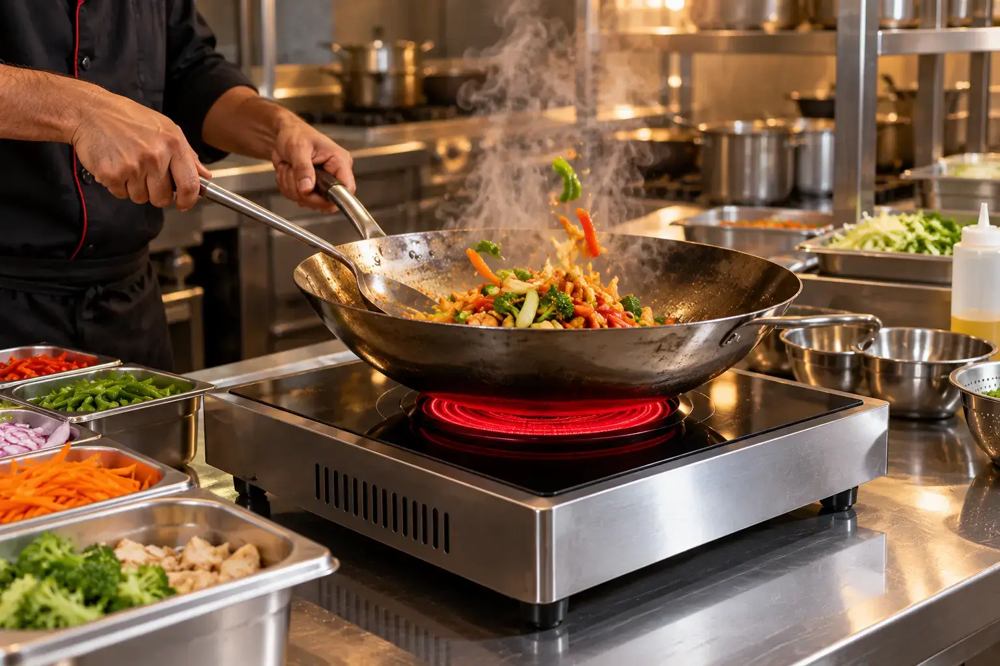
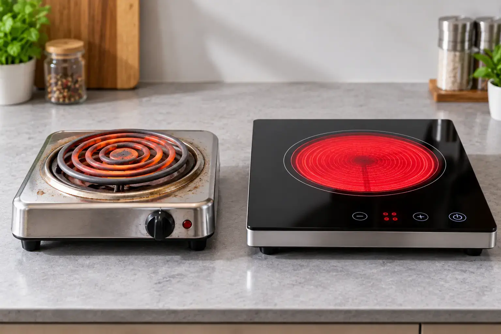

Hot Plate Price in Pakistan 2026 (Electric Hot Plate Guide)
Quick answer: Basic coil electric hot plates in Pakistan cost Rs 1,500 – 3,000, ceramic infrared hot plates cost Rs 17,000 – 20,000 (e.g. Hot Glow-912 at Rs 17,520), and a heavy-duty commercial electric hot plate such as the 2700W GG-Cook King-12 costs about Rs 43,200.

Image slot — upload images/hot-plate-price-in-pakistan-hero-1.webp
Image slot — upload images/hot-plate-price-in-pakistan-hero-2.webpElectric hot plate price in Pakistan by type
| Hot plate type | Typical power | Price range (PKR) | Good for |
|---|---|---|---|
| Coil / solid-iron hot plate | 1000–1500W | 1,500 – 3,000 | Tea, eggs, hostel use |
| Infrared ceramic hot plate | 2000–2200W | 17,000 – 20,000 | Daily home cooking |
| Double-burner ceramic hob | 2200W+ | 38,000 – 42,000 | Family kitchens |
| Commercial electric hot plate | 2500–3000W | 40,000 – 50,000 | Restaurants, caterers |
Commercial electric hot plate for restaurants
Restaurants, cloud kitchens and dhabas in Karachi's Saddar, Lahore's food streets and Islamabad's markets need a hot plate that stays hot for hours without tripping. Look for 2500W+, a steel body, digital temperature control and a timer.
Glam Gas GG-Cook King-12 Commercial Electric Hot Plate
 Image slot — upload images/hotplate-gg-cook-king-12-1.webp
Image slot — upload images/hotplate-gg-cook-king-12-1.webp Image slot — upload images/hotplate-gg-cook-king-12-2.webp
Image slot — upload images/hotplate-gg-cook-king-12-2.webpRs 43,200 Rs 48,000 (glamgas.com, checked 2026-09-28)
The GG-Cook King-12 is the heavy-duty pick: 2700W, 220V/50Hz, 4.7 kg net weight, digital display with power/temperature control and a timer, and a stable ceramic surface for woks and big pots.
- Type: Heavy-duty commercial electric hot plate with digital display & timer
- Power: 2700W
- Pot load: Large woks & heavy pots
- Electricity: Up to 2.7 units/hour at full power
- Best for: Restaurants, dhabas, caterers, heavy wok cooking
- Warranty: 1 year on electrical parts (glass/body damage not covered)
Best electric hot plate for home cooking
Glam Gas Hot Glow-912 Infrared Cooker
 Image slot — upload images/hotplate-hot-glow-912-1.webp
Image slot — upload images/hotplate-hot-glow-912-1.webp Image slot — upload images/hotplate-hot-glow-912-2.webp
Image slot — upload images/hotplate-hot-glow-912-2.webpRs 17,520 Rs 21,900 (glamgas.com, checked 2026-09-28)
For home use, a 2200W infrared hot plate is the sweet spot. The Hot Glow-912 handles an 18–20 kg biryani pot, works with steel, aluminium and iron cookware, and plugs into any socket.
- Type: Single-burner infrared ceramic cooker (portable)
- Power: 2200W
- Pot load: 18–20 kg
- Electricity: ≈1.5 units/hour (brand figure)
- Best for: Students, hostels, rented flats, small families, inverter backup
- Warranty: 1 year on electrical parts (glass/body damage not covered)
Coil hot plate vs infrared hot plate
A coil hot plate is cheap but wastes heat, takes longer to boil and is hard to clean once food spills into the coil. An infrared ceramic hot plate heats faster, has a flat wipe-clean glass top, and includes a cooling fan and overheat cut-off. Over a year of daily cooking, the better efficiency and lifespan usually justify the higher price. More detail: infrared vs induction vs hot plate.
Where to buy a hot plate in Pakistan
Buy from the official brand store or authorised marketplaces so the 1-year warranty is valid. Glam Gas delivers nationwide from Karachi — see delivery by city.
Frequently Asked Questions
What is the hot plate price in Pakistan?
Coil hot plates cost Rs 1,500–3,000; infrared ceramic hot plates Rs 17,000–20,000; commercial 2700W electric hot plates around Rs 43,200 (Glam Gas GG-Cook King-12).
Which electric hot plate is best for a restaurant?
Choose 2500W or more with a steel body, digital temperature control and a timer — for example the 2700W Glam Gas GG-Cook King-12.
Is a hot plate the same as an electric stove?
In Pakistan the terms are used interchangeably. Technically, a hot plate is a single cooking surface; an electric stove can have one or more burners.
How much electricity does a 2700W hot plate use?
Up to 2.7 units per hour at full power; less when the thermostat cycles.
Can I use a pressure cooker on a hot plate?
Yes, on a flat-bottom infrared hot plate. Stay within the rated pot load (18–20 kg on Hot Glow models).